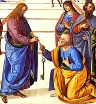

St. Peter
A critical study of the available evidence shows that already in the first century the unique position of the Church of Rome was recognized by other churches. The earliest papal letter of which we have knowledge—the Epistle of Pope St. Clement (c. 96)— speaks in a tone of "authoritative direction." Rome, the capital of the civilized world, was even now the official center of Christendom; and St. Peter and his successors in this see had begun an unbroken line of pontiffs, divinely charged with the supreme leadership of the Universal Church.
St. Peter (c. 42-67), who had received from our Lord jurisdiction over the whole Church, became the first bishop of Rome. The date of his arrival, the length of his residence, and the details of his activity remain more or less uncertain; various writers present various theories. But modern scholarship regards as certain his visit to Rome and his death by martyrdom there— two historical facts which support the claim made by the bishops of Rome to be the successors of St. Peter.
McSorley, Joseph. An Outline History of the Church by Centuries (from St. Peter to Pius XII). 2nd Ed. 1944.